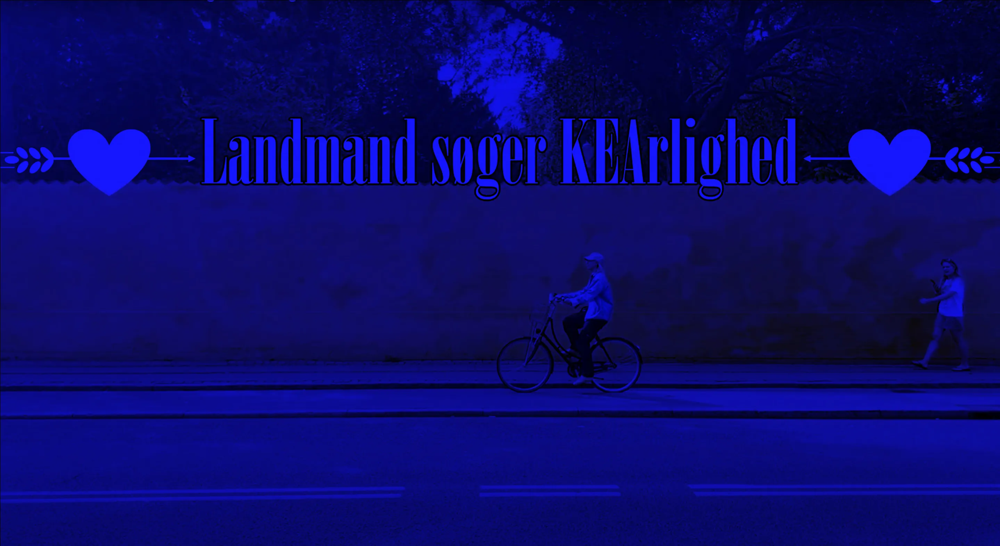
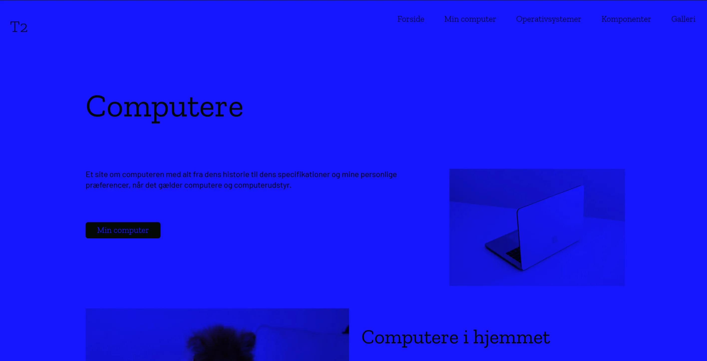
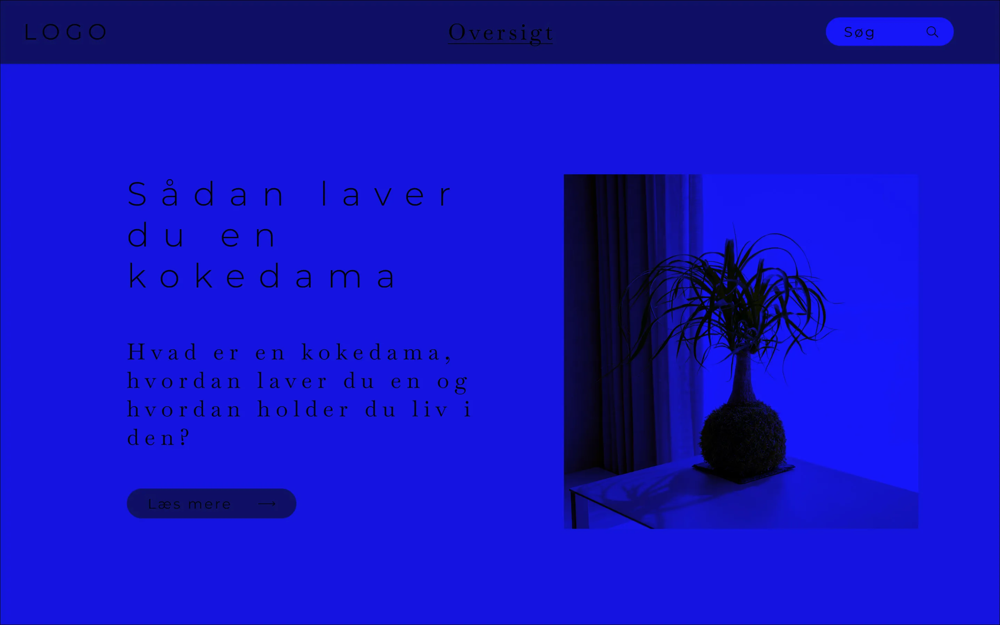
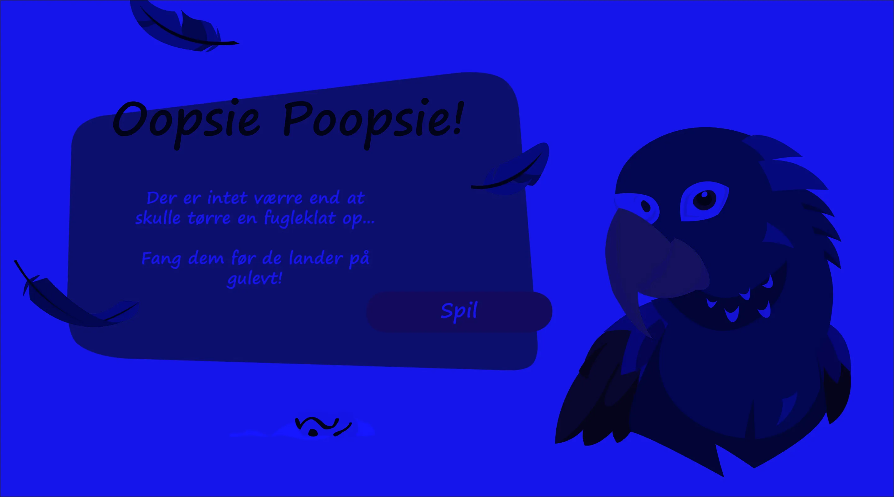
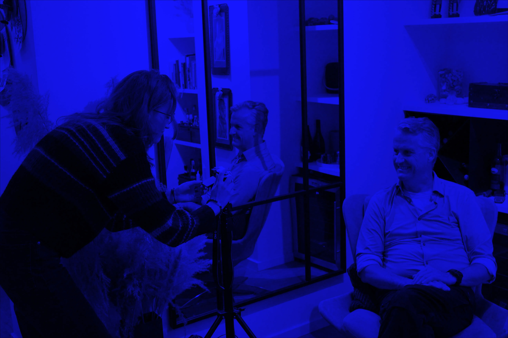

PORTFOLIO

Filming

This was the first project. It was a group project and I filmed the
non-b-roll shots (excluding those of myself). Before filming, we
studied an intro sequence of a dansih tv-show called "Farmer
Searching for Love", and our goal was to mimic their style. We
created a story board to ensure this. I recommend watching it mute
however - you've been warned.
You can watch the whole video here:
Figuring out CSS and HTML

This was my first time coding in HTML and CSS.
I had all of the content handed to me, and then I had to follow a
given wireframe. It doesn't look the best, but we all start
somewhere and I learned a lot from it.
You can view the full site here:
UI/UX for Web

Similar to the previous project, but this time I made all the
content as well as the wireframes.
I learned a lot about testing and eventually made a high fidelity
prototype in Figma. Unfortunately I got really sick and couldn't
code the prototype to create the final website.
You can view the prototype here:
Animation and Game Design

Not only was this my introduction to JavaScript, it was also the
first time a had to put my knowledge of UI and UX into a different
media than web.
It was the most challenging, but also the most
fun out of all the projects I did this semester.
You can play the game here:
Interviewing and Video Editing

Like the very first project, this was a challenge in filmmaking.
Unlike the first project, this also included an interview. I wanted
good answers, so I learned how to ask good questions.
After I
had done the filming, I edited it all, which was a challenge, as it
had to be exactly 60 seconds +- 0 seconds.
You can watch the whole video here: